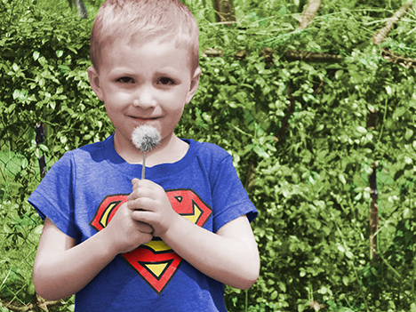
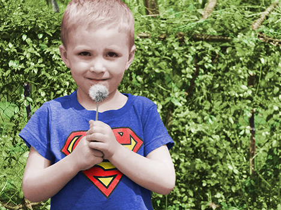
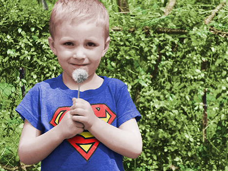

VJEŽBE - piksel grafikai i video/web
Projektni zadatak iz vektorske grafike (1.slika)
5. vježba - retuširanje (2.,3. slika)
6. vježba - koloriranje (4.,5. slika)
8. vježba - kinemagraf (6.,7. slika)
 



Ovo su radivo iz prvog poglavlja kolegija Digitalnog Multimedija
1. vježba - izrada vlasitog fonta (1. slika)
2. vježba - bazierove krivulje (2. slika)
3. vježba - sustavi boja, tranformacije (3.,4.slika)
4. vježba - gradijenti, transparencija (5.,6.slika)
Projektni zadatak iz vektorske grafike (1.slika)
5. vježba - retuširanje (2.,3. slika)
6. vježba - koloriranje (4.,5. slika)
8. vježba - kinemagraf (6.,7. slika)
